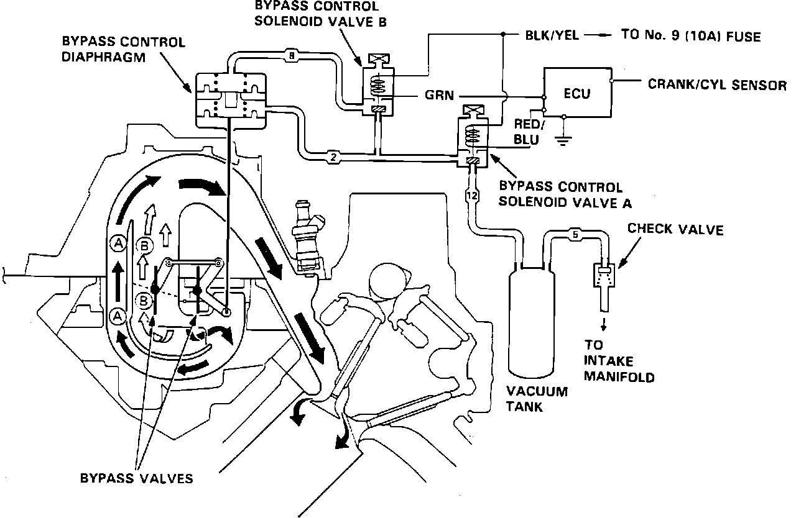
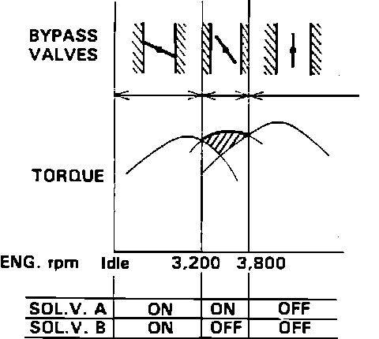

Bypass Control System
Bypass Control System:

The bypass control system is an integral part of the intake manifold. The system consists of 6 butterfly valves, (three on each of two separate control shafts), a dual stage vacuum actuator and two control solenoids. The system is used to allow the engine to maintain highest possible torque output at all engine speeds.
Bypass Operation:

At engine speeds lower than 3200 rpm the ECU provides a ground to both solenoids. When grounded the solenoids allow vacuum to pull the vacuum actuator completely closed. The closed bypass valves force the intake air to take a longer path through the intake manifold to increase mixture velocity. As engine speed increases the ECU individually removes the ground from each solenoid, starting with solenoid B and then solenoid A at 3800 rpm. When the solenoid ground is removed, the vacuum actuator opens the bypass valves. With the valves open intake air is allowed to pass through a shorter passage in the intake manifold, reducing air resistance and increasing performance.